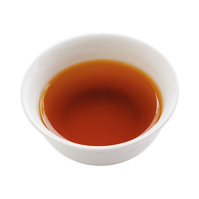
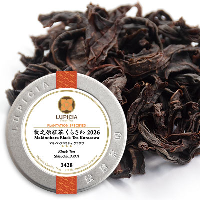

마키노하라홍차 구라사와 2026
牧之原紅茶 くらさわ 2026


名産地牧之原の名園 生産者こだわりの逸品。
芳醇な香気とシャープな風味に、豊かな焙煎の旨みと甘みが重なります。静岡を代表する名園の個性的な和紅茶。
【品種について】
「くらさわ」は「やぶきた」からの選抜品種で、収量が多いことから、日本茶の国内需要が急増した昭和40年代には静岡県の奨励品種に指定されていました。
渋みが強いこと、萎凋すると甘い果実香が現れることが特徴で、紅茶に加工するとクチナシの花に似た甘い香りと、さわやかさのあるお茶になります。
【牧之原について】
大井川の下流右岸に位置する牧之原台地は、日本茶の主要産地として広く知られていますが、お茶の栽培・生産が開始されたのは明治初期と比較的新しい産地です。
明治2年（1869年）の版籍奉還により、職を失った武士たちを中心に牧之原台地の開拓を開始、苦労の連続の末、4年後の明治6年（1873年）に初めての茶摘みが行われました。
明治中期に戸塚豊蔵や今村茂兵衛らによって「深蒸し茶」製法の原型が考案されると、牧之原茶の持つまろやかな味わいが評判となり、日本全国にその名が知れ渡るようになります。
その後、安定的な生産を継続しながら、積極的な研究・開発や機械化への取り組みなどを通じ、日本を代表する茶産地の地位を築き上げ、現在に至っています。
【駄農園について】
駄農園は約70年続くお茶の生産農家で、現在の園主髙塚貞夫さんは3代目に当たります。
名前の由来は、初代吾郎氏の研究熱心な姿にあります。牧之原の気候風土に合ったお茶を作ろうと試行錯誤、最大54種類もの品種を栽培するなど、小さな農家が研究に没頭。それを見た友人から「お前は駄農だな」と言われたことから、自ら「駄農園」を名乗るようになりました。
現在、髙塚貞夫さん・朋子さんご夫婦が、「駄農園」の名を受け継いでいます。
栽培品種は、やぶきた、かなやみどり、くらさわ、べにふうきなど、計13品種。
農薬と化成肥料不使用での栽培、自家栽培の茶葉のみを使用し、毎日飲んでも飲み飽きることなく、体にスッと染みるお茶作りを実践されている生産者です。
- 상품번호
- 3428
- 상품 형태
- 20g 캔입
- 가격
- 1,530円
- 판매 안내
- ※기간・수량한정
※상미기한：제조일로부터2년 - 원재료
- 紅茶※商品の改定などにより、商品パッケージの記載内容が上記内容と一部異なる場合がございます。
- 원산지
- 日本・静岡※商品の改定などにより、商品パッケージの記載内容が上記内容と一部異なる場合がございます。
- 찻잎
- 2.5-3g
- 물
- 熱湯
- 우림 시간
- 2-3分
- 우림 횟수
- 1-2回